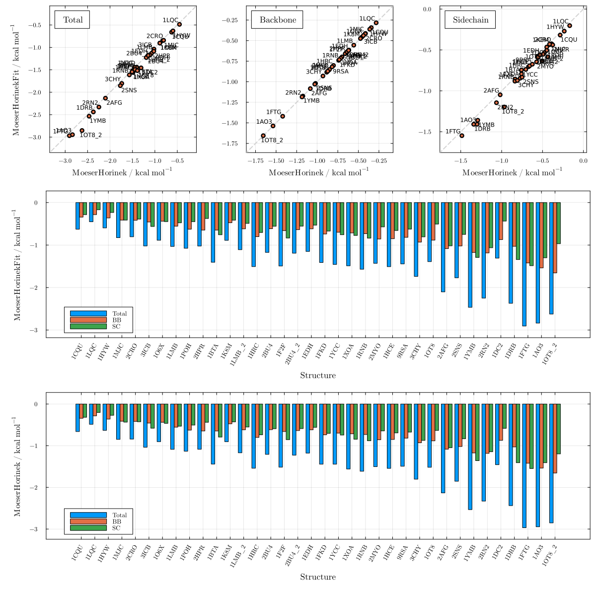
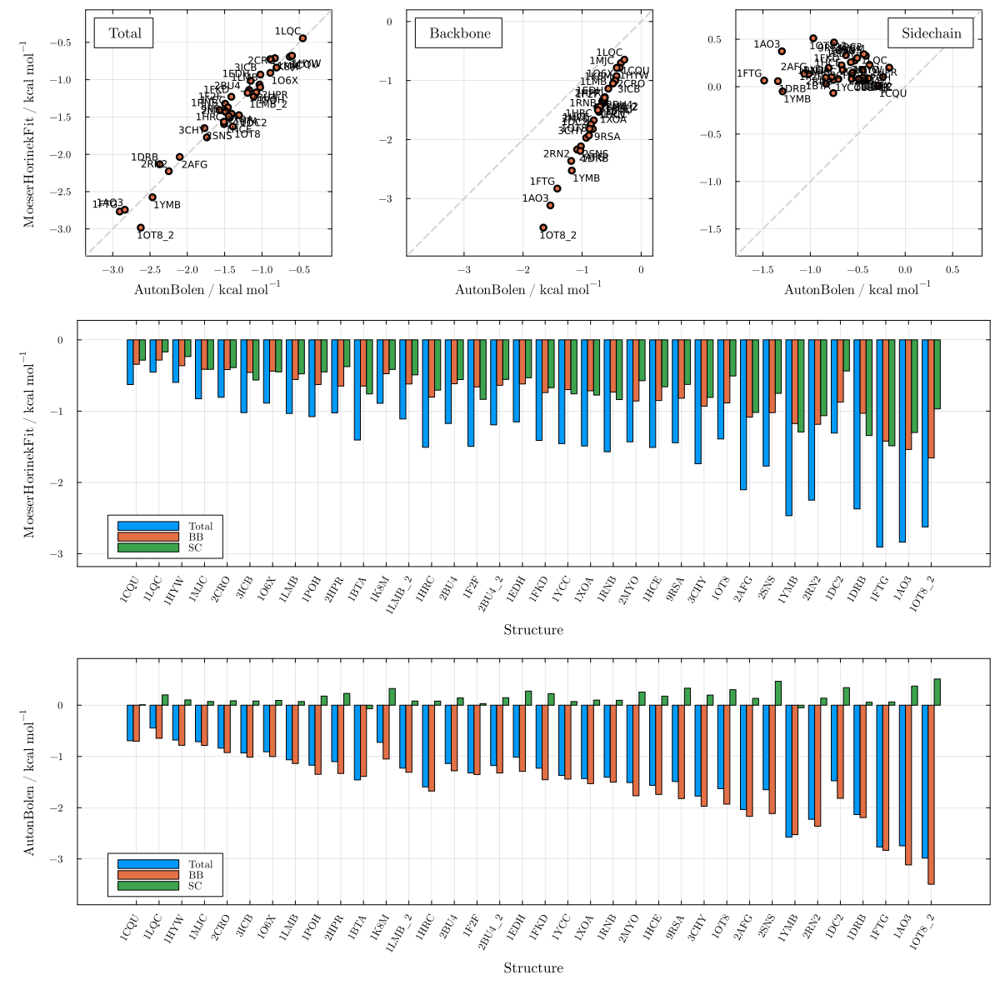
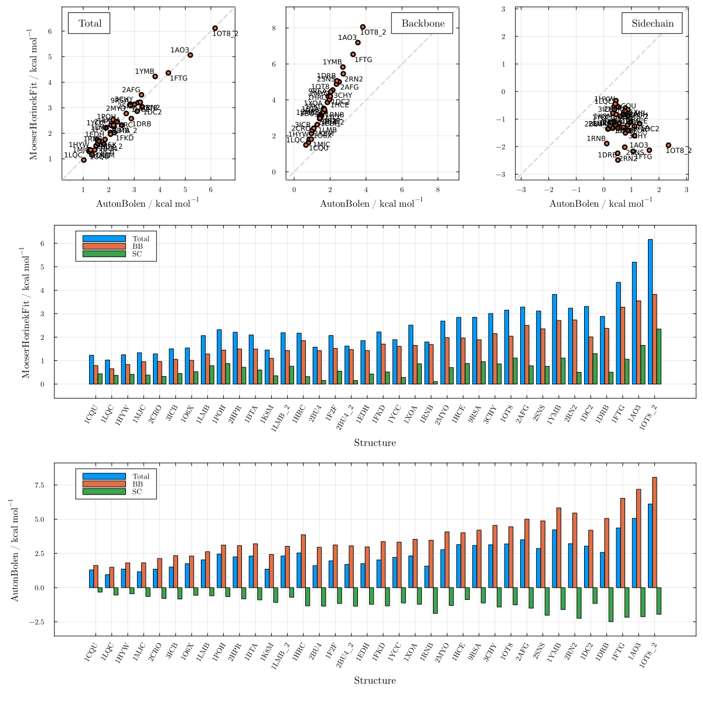
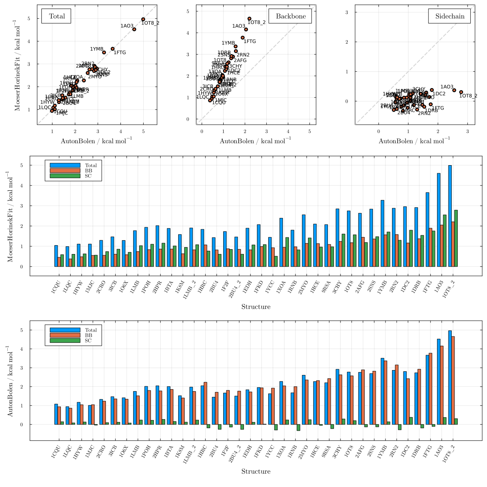
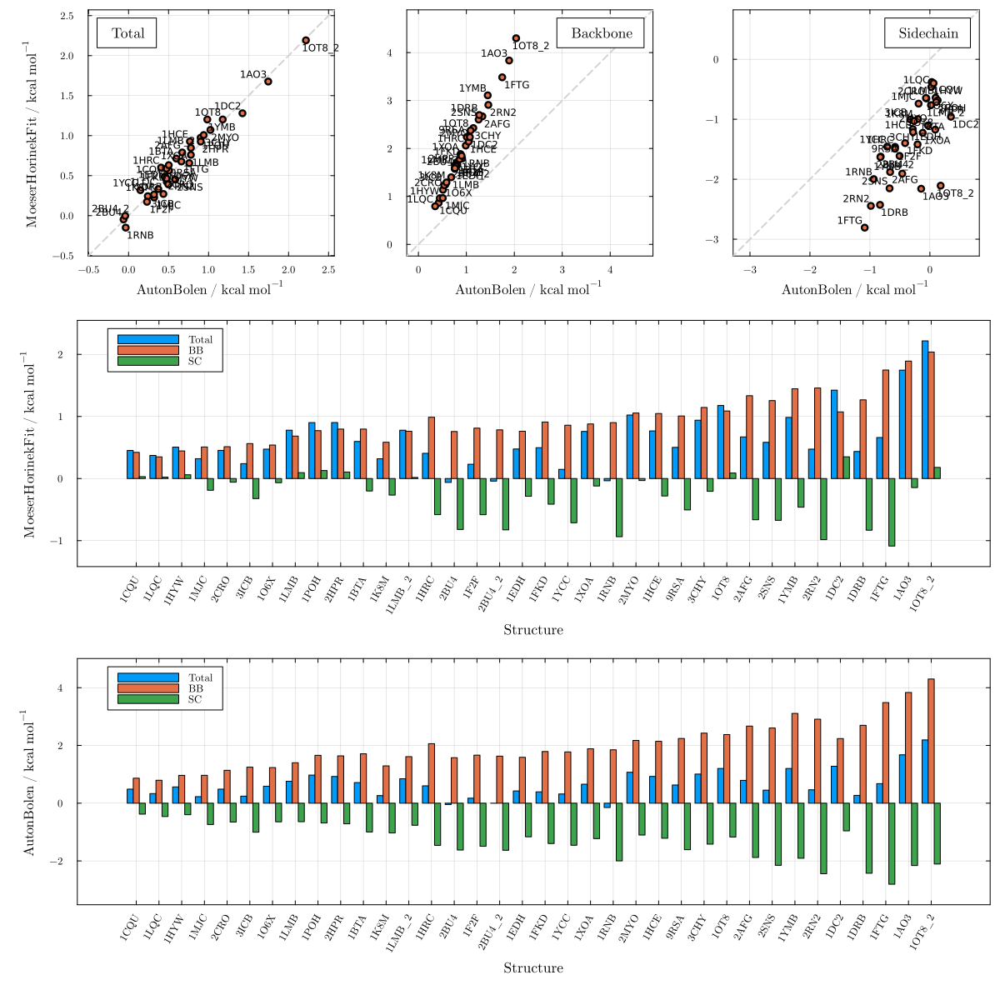
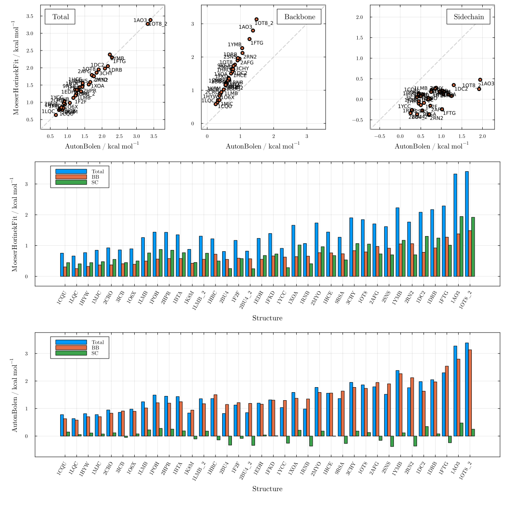
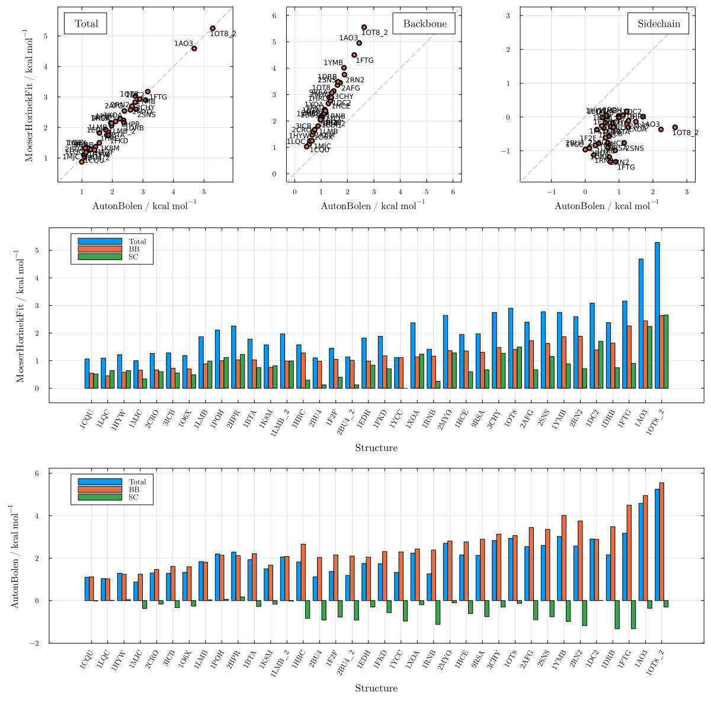
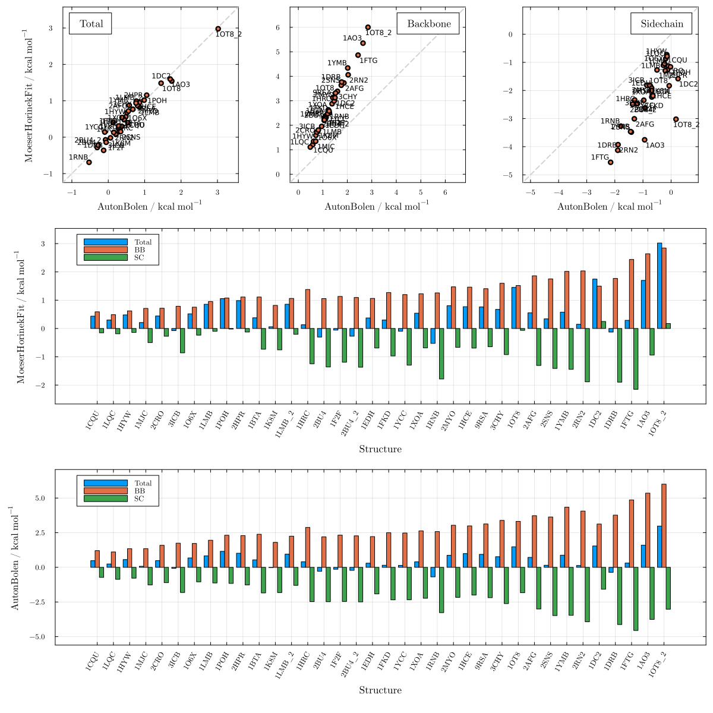
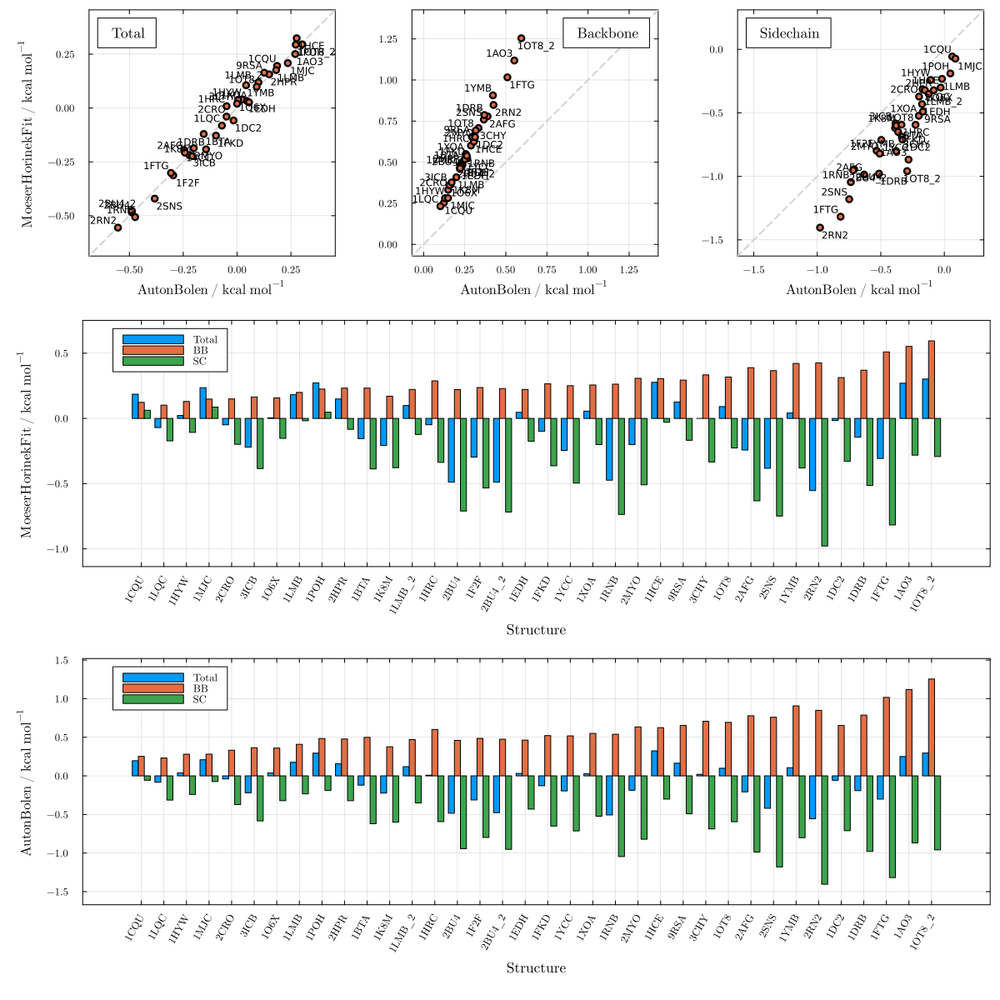
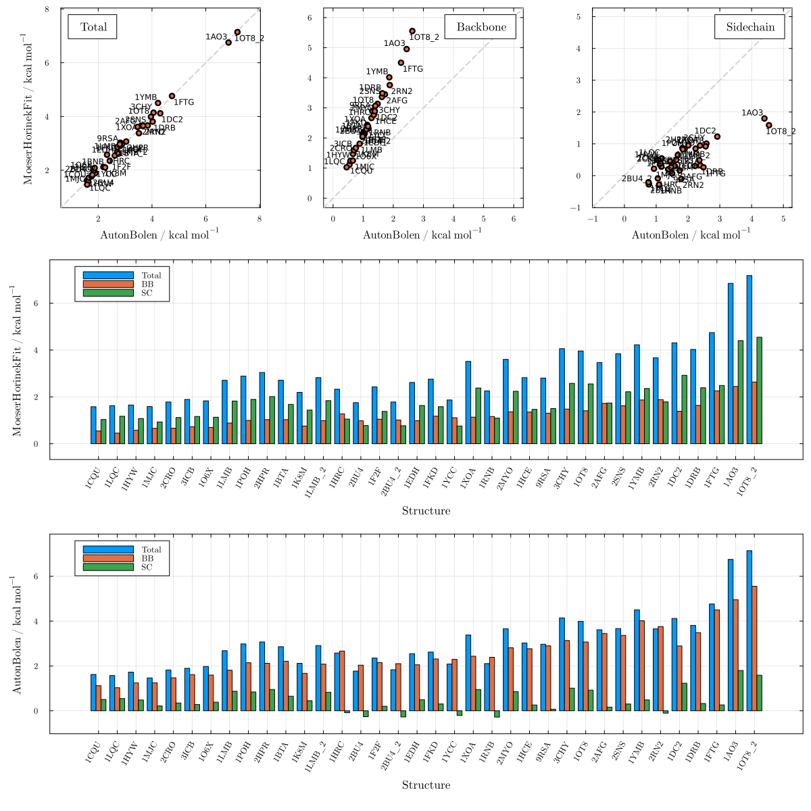

Moeser & Horinek adjusted by Gly non-ideality
These plots show the novel MoeserHorinekFit model, which extends the MH glycine-activity correction to all cosolvents covered by the AB parameterization. For each cosolvent, a single correction constant $\gamma$ is fit so that MoeserHorinekFit total m-value predictions reproduce those of AutonBolen across 36 reference proteins, while retaining the MH universal backbone treatment. The fitted urea correction (≈15 cal mol⁻¹ M⁻¹) closely reproduces the theoretical Moeser–Horinek value, validating the approach. Comparisons against AutonBolen correspond to Figure 3 of the paper; fitted $\gamma$ values for all cosolvents are listed in Table 1 of the paper.
using LAPM, PDBToolsAgainst Moeser & Horinek
Urea — Figure S30
plot_MH_vs_AB("urea"; m1=MoeserHorinek, m2=MoeserHorinekFit)
Against Auton & Bolen
Urea — Figure S31
plot_MH_vs_AB("urea"; m1=AutonBolen, m2=MoeserHorinekFit)
TMAO — Figure S32
plot_MH_vs_AB("tmao"; m1=AutonBolen, m2=MoeserHorinekFit)
Sarcosine — Figure S33
plot_MH_vs_AB("sarcosine"; m1=AutonBolen, m2=MoeserHorinekFit)
Proline — Figure S34
plot_MH_vs_AB("proline"; m1=AutonBolen, m2=MoeserHorinekFit)
Sorbitol — Figure S35
plot_MH_vs_AB("sorbitol"; m1=AutonBolen, m2=MoeserHorinekFit)
Sucrose — Figure S36
plot_MH_vs_AB("sucrose"; m1=AutonBolen, m2=MoeserHorinekFit)
Betaine — Figure S37
plot_MH_vs_AB("betaine"; m1=AutonBolen, m2=MoeserHorinekFit)
Glycerol — Figure S38
plot_MH_vs_AB("glycerol"; m1=AutonBolen, m2=MoeserHorinekFit)
Trehalose — Figure S39
plot_MH_vs_AB("trehalose"; m1=AutonBolen, m2=MoeserHorinekFit)